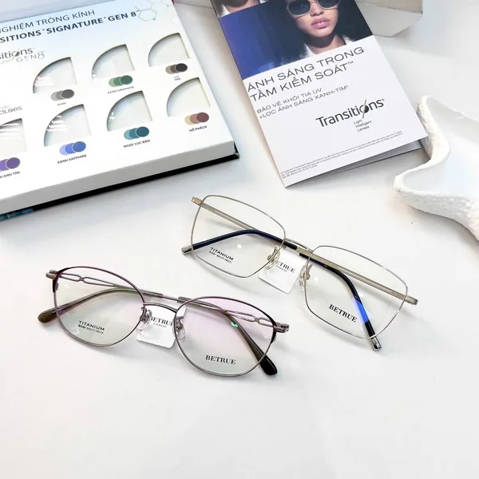

{{ t.ud1t }}
{{ t.ud1s }}
{{ seasonLabel }} · {{ t.newSeason }}
{{ t.heroDesc }}
{{ t.reality }}
{{ t.viewSeason }}{{ t.heroDescInline }}
{{ t.reality }}
{{ seasonLabel }} · {{ t.newSeason }}
{{ t.udKicker }}
{{ t.udNote }}
{{ t.udSeeAll }}{{ t.collection }} · {{ seasonLabel }}
{{ p.shape }}
{{ hotEmptyNote }}
{{ tr.tag }}
👁 {{ tr.views }}
{{ hr.title }}
👁 {{ hr.views }}
{{ art.tag }}
{{ art.excerpt }}
{{ art.date }}
{{ t.faqKicker }}
{{ t.faqA1 }}
{{ t.faqA2 }}
{{ t.faqA3 }}
{{ t.faqA4 }}
{{ t.faqA5 }}
{{ t.faqA6 }}
{{ t.visitStudio }}
{{ t.storeBody }}
{{ seasonLabel }} · {{ detail.tierLabel }}
{{ detail.shape }}
{{ t.colour }}
{{ detail.colorLabel }}
{{ t.lens }}
{{ shipNote }}
{{ cartCountLabel }}
{{ t.bagEmpty }}
{{ i.shape }}
Lens · {{ i.lens }}
{{ t.searchResults }} "{{ searchQuery }}"
{{ t.myPage }}
{{ accountEmail }}
{{ t.myPage }}
{{ authError }}
{{ qa.q }}
{{ qa.a }}
{{ t.asBody }}
{{ t.policyBody }}
{{ article.tag }}
{{ t.bylinePrefix }} Alvin · 147A Lê Duẩn, Phường Cửa Nam, Hà Nội · {{ t.bylineUpdated }} {{ article.date }}
{{ lp.text }}
{{ t.takeawayTitle }}
{{ article.takeaway }}
{{ t.tocTitle }}
{{ s.label }}
{{ b.text }}
| {{ h }} |
|---|
| {{ c }} |
{{ it }}
{{ para }}
{{ pa.q }}
{{ pa.a }}
{{ f.q }}
{{ f.a }}
{{ t.disclaimerTitle }}
{{ article.disclaimerText }}
{{ t.relatedTitle }}
{{ r.title }}
{{ article.cta }}
{{ t.navStore }}{{ m.tag }}